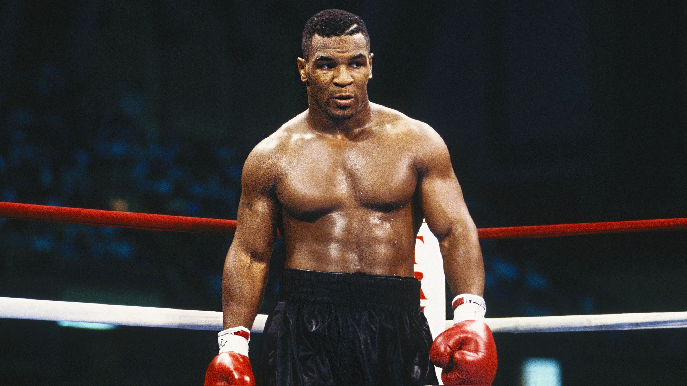

Jamie Foxx will play boxing great Mike Tyson in a new biographical limited series, Variety has learned.
The series, titled simply “Tyson,” is not currently set up at a network or streaming service, but will no doubt find one quickly given the names attached to it already. Antoine Fuqua is onboard to direct and executive produce via Fuqua Films, with Martin Scorsese also executive producing via Sikelia Productions.
The series is said to span the whole of Tyson’s life.
“I have been looking to tell my story for quite some time,” Tyson said. “With the recent launch of Legends Only League and the excitement from fans following my return to the ring, now feels like the perfect moment. I look forward to collaborating with Martin, Antoine, Jamie, and the entire creative team to bring audiences a series that not only captures my professional and personal journey but also inspires and entertains.”
Colin Preston wrote the the pilot for “Tyson” and is currently working on writing the full series. Foxx will executive produce in addition to starring. Along with Fuqua and Scorsese, Tyson and his wife, Kiki Tyson, will executive produce along with Sophie Watts and John Ryan Jr. on behalf of Tyson’s Legends Only League. Rick Yorn of LBI Entertainment will also executive produce. Azim Spicer of Legends Only League will serve as associated producer.
Foxx has been discussing his involvement in a Tyson project for some time, stating last year that he was deep into training for the role, though at the time it was said to be a biopic rather than a series.
This is the second Tyson limited series announced in the past month. Hulu previously announced that it had ordered an eight-episode limited series about the boxer, but Tyson came out strongly against that series when it was announced and said he was not involved in it.
Tyson made worldwide headlines when he became the youngest ever heavyweight champion in boxing history in 1986 at the age of 20. He remained a major force in boxing for years and is widely considered one of the greatest heavyweight fighters of all time. But his life outside the ring attracted perhaps even more attention, with Tyson becoming infamous for his wild exploits. He was also accused of serious mental and physical abuse by his wife, Robin Givens, and was convicted of rape in 1992, ultimately serving less than three years in prison.
He has made a comeback of sorts in recent years, appearing in projects like “The Hangover” film franchise as himself and performing in a one man show on Broadway. He has also been open about his struggles with mental illness and substance abuse. Most recently, Tyson fought an eight round exhibition fight against Roy Jones Jr. in November, which ended in a draw. The event served as the launch of the Legends Only League.
Foxx is repped by CAA, LBI Entertainment and Ziffren Brittenham. Fuqua is repped by LBI Entertainment and Ziffren Brittenham. Scorsese is repped by WME, LBI Entertainment and Hansen Jacobson. Tyson is repped by Paradigm.